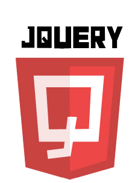
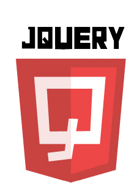
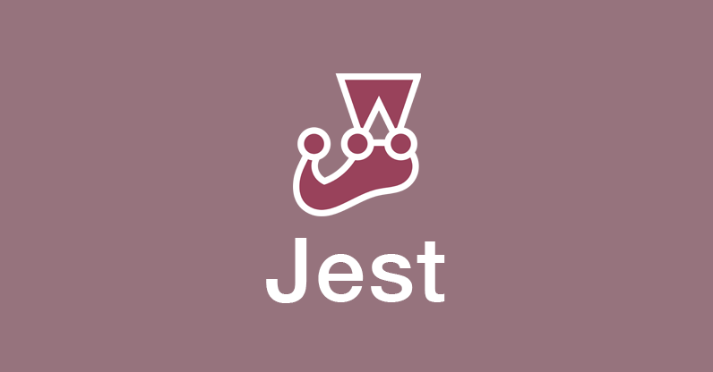
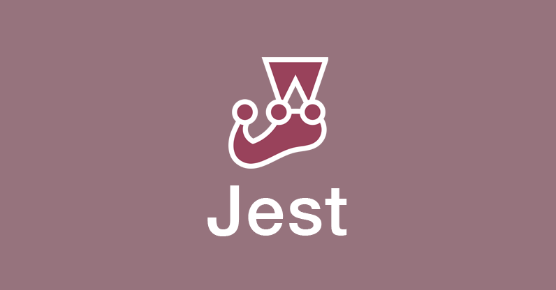

About Me

Summary
Born and raised in Sandy, UT. I am an avid swimmer since I was a little boy. Swimming, playing water polo and track/Cross Country were my go to sports. I attended Brighton High School where I graduated and then Joined the United states Marine Corps Reserve. After a year of the Marines, I served a mission or religious sabbatical for the Church of Jesus Christ of Latter Day Saints in Panama City, Panama. Immediately following my mission, I returned to serve six years with the Marine Corps and attended the University of Utah to study Middle Eastern Studies. After two years of studying Arabic and the history of the Near East, I switched my major to Computer science with an emphasis in information security. I graduated from Southern New Hampshire in computer science. All while serving in the Marine Corps Reserve and studying, I was working as a software engineer in test for many years. Following 8 years as a SDET within the industry, I made a career change to become a software engineer. And Last but certainly the most important, I am married to a wonderful panamanian woman whom I met on my mission and I have two wonderful children, a boy and a girl.
Hobbies
- Hiking
- Backpacking
- Camping
- Kayaking
- Reading
- Writing
- Spartan/Tough Mudder races
Skills
Languages


 



Certificates


Testing frameworks
 



Tools

Paradigms